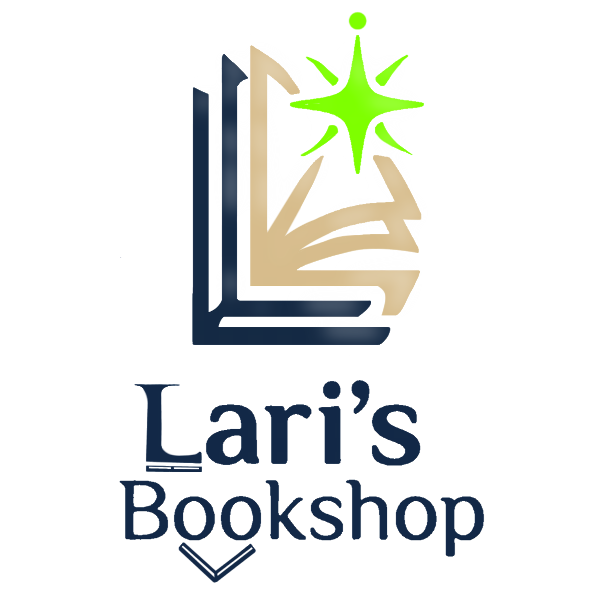

Sobre Nós
Bem-vindo à Lari's Bookshop!
ㅤㅤㅤㅤㅤATENÇÃO:
A Lari's Bookshop NÃO é uma livraria real, mas sim um projeto fictício criado para fins de estudo, desenvolvimento e demonstração de habilidades em design e programação web.
O projeto foi desenvolvido como parte de um portfólio pessoal, com o objetivo de praticar e aplicar conceitos de HTML, CSS e JavaScript, além de explorar princípios de design, experiência do usuário e desenvolvimento de interfaces.
ㅤㅤㅤㅤㅤA Lari's Bookshop não possui um sistema de e-commerce real. Portanto, nenhuma compra, pagamento ou transação realizada através deste projeto é válida.
O site também não está conectado a um servidor ou banco de dados real e não armazena informações fornecidas pelos visitantes.
Por segurança, não insira dados pessoais, informações bancárias, números de cartão, senhas ou qualquer outra informação verdadeira neste site.
ㅤㅤㅤㅤㅤDa mesma forma, não me responsabilizo por qualquer compra, pagamento ou transação realizada em sites semelhantes ou que utilizem indevidamente o nome, a identidade visual ou o conceito da Lari's Bookshop.
Caso você encontre na internet um site que se apresente como a Lari's Bookshop e solicite informações pessoais ou financeiras, tenha cautela e considere denunciar o site às autoridades ou plataformas responsáveis.
ㅤㅤㅤㅤㅤA Lari's Bookshop foi inspirada em minha namorada e companheira, Larissa, uma leitora assídua e apaixonada por livros. A ideia surgiu a partir de um desejo simples dela: eu criar uma livraria virtual que não fosse apenas um lugar para comprar livros, mas também um ambiente acolhedor, elegante e agradável para quem ama ler. Segundo ela, muitas livrarias que procuram transmitir uma sensação de luxo acabam associando essa estética a preços elevados ou a ambientes pouco acessíveis. Por isso, surgiu a proposta de criar algo diferente: uma experiência visual que transmitisse conforto, sofisticação e tranquilidade, sem perder a essência acolhedora de uma livraria.
ㅤㅤㅤㅤㅤFoi a partir dessa ideia que nasceu a Lari's. Cada detalhe do projeto foi pensado para transmitir essa sensação, desde as cores utilizadas até a identidade visual e a logo, criada por mim para o projeto. Ao observar diferentes lojas virtuais de livros, percebi que muitas delas possuem layouts bastante funcionais e objetivos, com foco quase exclusivo na venda dos produtos. Na Lari's, a proposta é um pouco diferente: criar um ambiente virtual que também desperte sentimentos. A intenção é que o visitante tenha a sensação de estar entrando em uma livraria física tranquila, confortável e sofisticada, onde possa explorar livros sem pressa.
ㅤㅤㅤㅤㅤAcredito que os livros possuem o poder de transformar vidas. Eles podem ensinar, emocionar, inspirar, confortar e até ajudar alguém a enxergar o mundo de uma maneira completamente diferente. Por isso, mesmo sendo um projeto fictício, procurei transmitir sentimentos que considero reais e importantes para qualquer leitor. A Lari's representa a paixão pela leitura. Cada elemento do projeto foi desenvolvido com a intenção de fazer com que o visitante se sentisse acolhido e pudesse imaginar como seria conhecer uma livraria criada especialmente para amantes de livros.
ㅤㅤㅤㅤㅤEste projeto também representa parte do meu processo de aprendizagem e evolução como desenvo--
lvedor. Pude colocar em prática conhecimentos de desenvolvimento web, experimentar diferentes ideias de design, trabalhar com identidade visual e compreender melhor como pequenos detalhes de uma interface podem influenciar a experiência de quem a utiliza. Mesmo não sendo uma empresa ou uma loja real, a Lari's Bookshop foi desenvolvida buscando representar uma experiência que poderia existir no mundo real. Meu objetivo foi criar algo que unisse funcionalidade, estética e emoção, transformando uma simples página web em um ambiente que despertasse curiosidade e interesse pela leitura. Seja você um leitor apaixonado, alguém que está descobrindo o hábito da leitura ou simplesmente alguém interessado em conhecer um projeto de desenvolvimento web, espero que encontre aqui um pouco da atmosfera que imaginei ao criar a Lari's Bookshop.
ㅤㅤㅤㅤㅤㅤㅤㅤㅤㅤㅤㅤㅤㅤㅤㅤㅤㅤㅤㅤㅤㅤㅤㅤㅤㅤAs vezes, tudo que precisamos é de uma boa história para fugir da realidade.
O código-fonte da Lari's Bookshop foi desenvolvido por mim como parte deste projeto de portfólio. A utilização, modificação ou redistribuição do código deve respeitar a licença definida para o projeto. A existência do código em um repositório público, como o GitHub, não significa automaticamente que ele esteja livre de direitos autorais.
Quando um projeto possui uma licença permissiva, como a licença MIT, o código pode ser reutilizado de acordo com os termos estabelecidos pela própria licença. Sem uma licença, não se deve presumir que o código pode ser copiado, redistribuído ou utilizado comercialmente sem autorização.
Copiar código proprietário ou apresentar código desenvolvido por outra pessoa como se fosse de sua própria autoria pode gerar consequências acadêmicas, profissionais e jurídicas, dependendo da situação. No Brasil, a proteção jurídica relacionada a programas de computador e direitos autorais é tratada, entre outras normas, pela Lei nº 9.609/1998 (Lei do Software) e pela Lei nº 9.610/1998 (Lei de Direitos Autorais).
Além disso, situações envolvendo invasão de sistemas, acesso não autorizado, obtenção de credenciais, furto de dados ou outras formas de acesso indevido podem envolver questões jurídicas distintas e mais graves.
Por fim, este projeto não possui qualquer vínculo com livrarias, editoras, marcas ou empresas reais. Qualquer semelhança com empresas, nomes, produtos, serviços ou livrarias existentes é mera coincidência ou resultado da utilização de referências comuns ao conceito de uma livraria virtual.